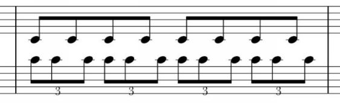

Polyrhythms have already been mentioned in the context of tuplets. A polyrhythm occurs when two or more distinct rhythms are present at the same time – when one voice plays in 4/4 while another plays in 6/8 for instance. Often times this is notated by having one voice play a particular tuplet. Playing and hearing polyrhythms can be quite difficult, but it can be practiced by learning tap your hands to different polyrhythmic patterns – three taps with one hand in the same amount of time as four taps with the other hand, for instance (this is called “3 on 4”). If you begin slowly you will start to notice rhythmic patterns within the polyrhythm, and it will be easier to perform and easier to hear.
Here is an example of a polyrhythm:

Figure 6.7. Polyrhythm example, both staffs are played simultaneously.
In this polyrhythmic example there are two distinct rhythms. There are eight notes in 4/4 on the top staff, and eight note triplets on the bottom staff, 12/8 time (could also be 4 eight note triplets in 4/4). Combining these two rhythms and playing them together at the same time produces what is known as polyrhythm.
For every four top notes, we can count:
1 2 3 4
And if we make them each the first note of a triplet we get:
1 e a 2 e a 3 e a 4 e a
So the top notes are played on 1, 2, 3, and 4 (can be tapped with your right hand). The bottom notes then fall on every other beat of the triplets:
1 e a 2 e a 3 e a 4 e a (tap with your left hand)
Bottom notes are in bold. Play these together and you will get a polyrhythm.
This is called “six on four” or “six over four” or “six against four”.
It is essentially the same as more common 3 (eight note triplets) against two (eight notes), but in this “six over four” example the duration of the bar is two times longer.
One way to see it is to just call it a syncopated triplet rhythm. But I am using it to illustrate the way two time signatures can work together. Polyrhythms are more obvious when they are, for instance, 3 on 4 or 5 on 4, but these are much harder to think about and hear since they can't be subdivided evenly (they are truly two completely different rhythms happening at the same time).